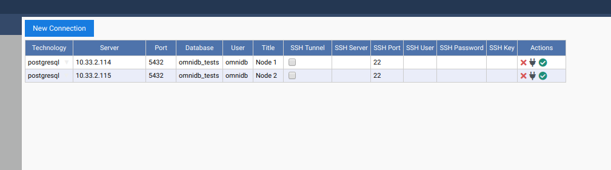
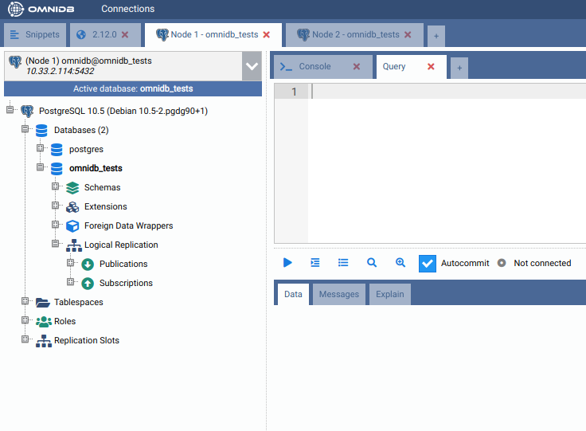
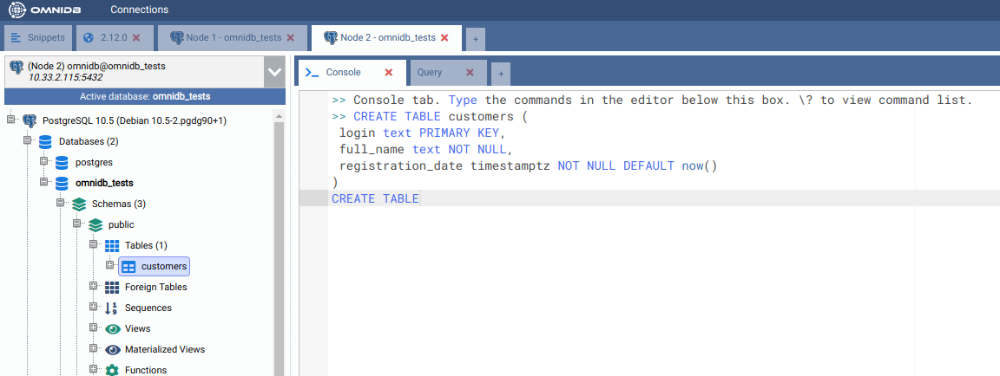
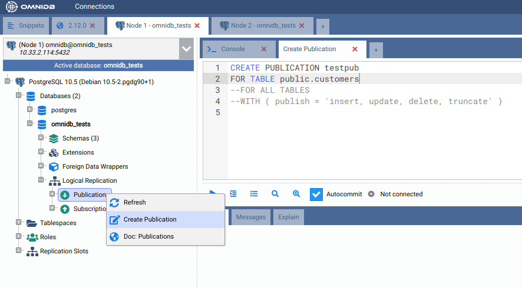
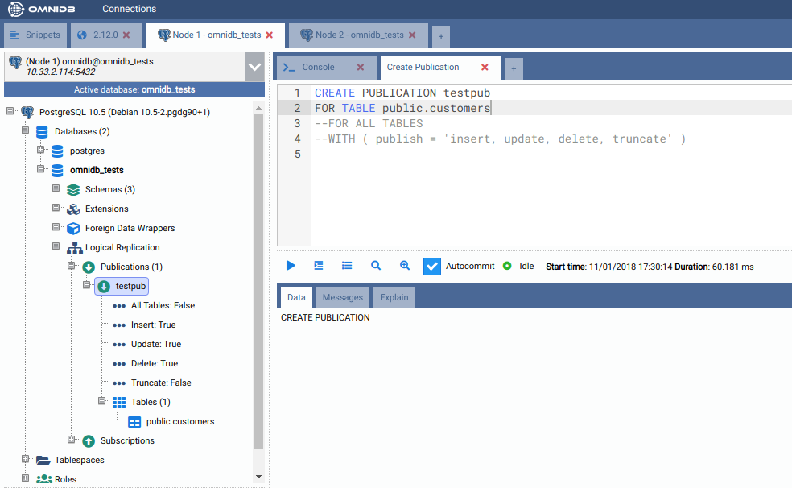
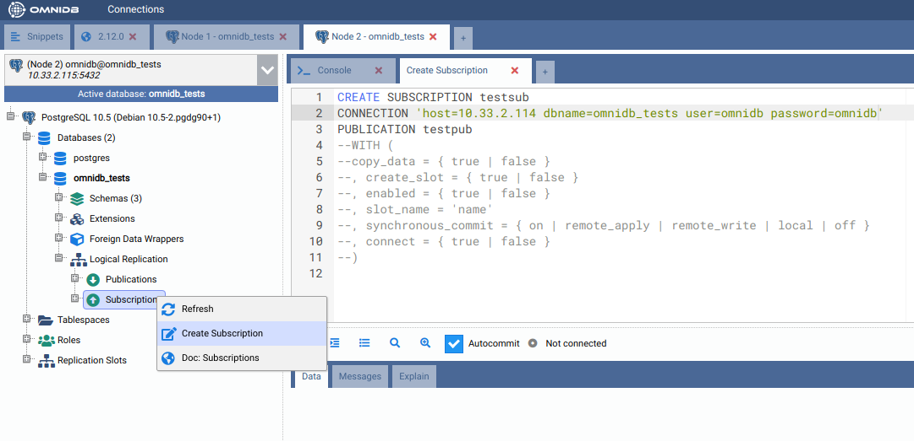
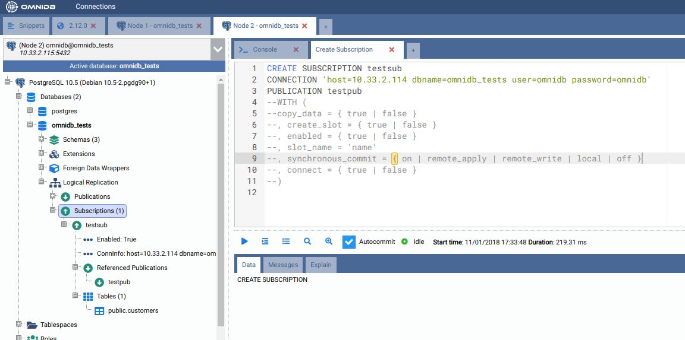
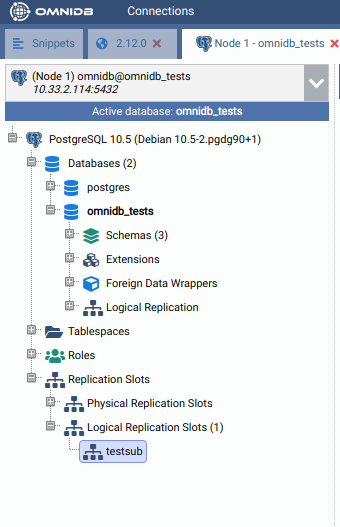
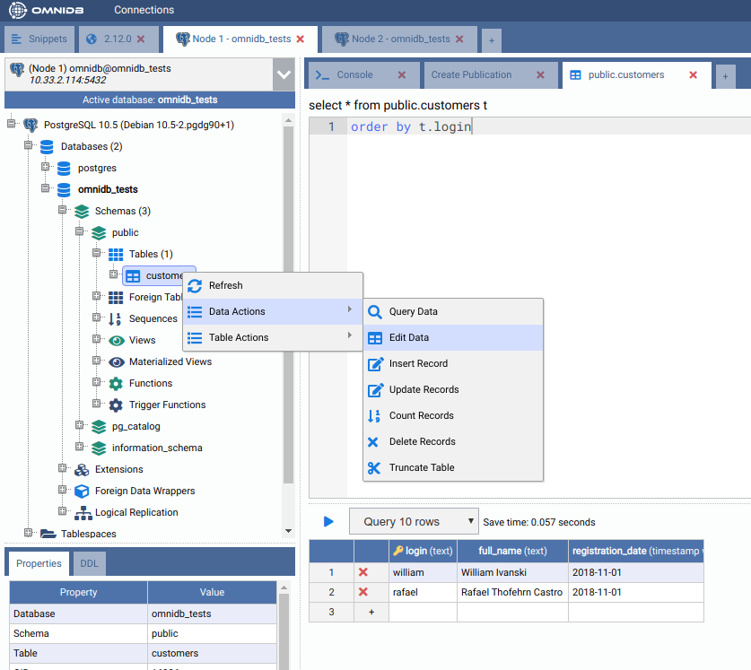
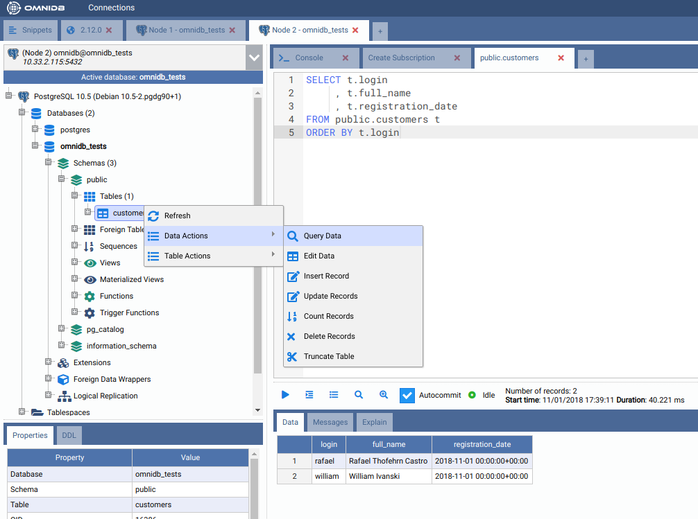

Replica logica
PostgreSQL 10 introduce la replica logica nativa, che utilizza un modello publish/subscribe: possiamo quindi creare pubblicazioni sul nodo a monte (o publisher) e sottoscrizioni sul nodo a valle (o subscriber). Per maggiori dettagli, consulta la documentazione di PostgreSQL.
In questo capitolo utilizzeremo un cluster a 2 nodi per dimostrare la replica
logica nativa di PostgreSQL 10. Nota che su ciascuna istanza PostgreSQL è
necessario configurare wal_level = logical e assicurarsi di modificare il
file pg_hba.conf per concedere l’accesso in replication tra i 2 nodi.
Creazione di un ambiente di test
Configura due istanze PostgreSQL 10+ nel modo che preferisci (Docker, una macchina virtuale o anche due database sulla stessa macchina) e imposta su ciascuna le configurazioni indicate sopra.
Connessione a entrambi i nodi
Usiamo OmniDB per connetterci a entrambi i nodi PostgreSQL. Per prima cosa, inserisci le informazioni di connessione nella griglia delle connessioni:

Seleziona quindi entrambe le connessioni. Nota come OmniDB riconosce di essere connesso a PostgreSQL 10 e abilita un nuovo nodo nell’albero della connessione corrente: si chiama Replica logica. Al suo interno troviamo Pubblicazioni e Sottoscrizioni.

Creazione di una tabella di test su entrambi i nodi
Su entrambi i nodi, crea una tabella come questa:
CREATE TABLE customers (
login text PRIMARY KEY,
full_name text NOT NULL,
registration_date timestamptz NOT NULL DEFAULT now()
)

Creazione di una pubblicazione sulla prima macchina
All’interno del nodo di connessione, espandi il nodo Replica logica, quindi
fai clic destro sul nodo Pubblicazioni e scegli l’azione Crea Pubblicazione.
OmniDB aprirà una scheda con un modello SQL contenente il comando
CREATE PUBLICATION, pronto perché tu possa apportare le modifiche necessarie
ed eseguirlo:

Dopo aver modificato ed eseguito il comando, puoi fare di nuovo clic destro sul nodo Pubblicazioni e selezionare l’azione Aggiorna. Vedrai che verrà creato un nuovo nodo con lo stesso nome assegnato alla pubblicazione. Espandendo questo nodo, potrai vedere i dettagli e le tabelle della pubblicazione:

Creazione di una sottoscrizione sulla seconda macchina
All’interno del nodo di connessione, espandi il nodo Replica logica, quindi
fai clic destro sul nodo Sottoscrizioni e scegli l’azione Crea Sottoscrizione.
OmniDB aprirà una scheda con un modello SQL contenente il comando
CREATE SUBSCRIPTION, pronto perché tu possa apportare le modifiche necessarie
ed eseguirlo:

Dopo aver modificato ed eseguito il comando, puoi fare di nuovo clic destro sul nodo Sottoscrizioni e selezionare l’azione Aggiorna. Vedrai che verrà creato un nuovo nodo con lo stesso nome assegnato alla sottoscrizione. Espandendo questo nodo, potrai vedere i dettagli, le pubblicazioni referenziate e le tabelle della sottoscrizione:

Inoltre, il comando CREATE SUBSCRIPTION ha creato uno slot di replica
logica chiamato testsub (con lo stesso nome della sottoscrizione) sulla
prima macchina:

Verifica della replica logica
Per verificare che la replica funzioni, creiamo alcuni dati sul nodo 1. Fai
clic destro sulla tabella public.customers, quindi vai su Azioni sui Dati
e fai clic sull’azione Modifica Dati. In questa griglia puoi aggiungere,
modificare ed eliminare dati dalla tabella. Aggiungi 2 righe di esempio, così:

Quindi, sull’altro nodo, verifica che la tabella public.customers sia stata
popolata automaticamente. Fai clic destro sulla tabella public.customers,
quindi vai su Azioni sui Dati e fai clic sull’azione Interroga Dati:

Come possiamo vedere, entrambe le righe create sulla prima macchina sono state replicate sulla seconda macchina. Questo ci conferma che la replica logica funziona correttamente.
Ora puoi eseguire altre azioni, come aggiungere/rimuovere tabelle dalla pubblicazione o creare una nuova pubblicazione che pubblichi tutte le tabelle.